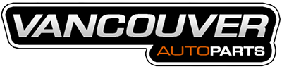
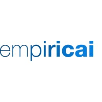

Senior Data Scientist - Intern
Company: Grey-box - Wireless Access to Digital Resources
Years: April 2024 - July 2024
Location: Quebec, Canada
- Developed and integrated BERTScore, METEOR Score, and ROUGE Score algorithms for advanced text comparison.
- Built and optimized database schemas and provided strategic recommendations for database management.
- Developed web scrapers for ethical data extraction, ensuring high data quality and usability.

Software Developer Engineer / Data Scientist
Company: VAP Auto Parts
Years: January 2023 - April 2024
Location: Vancouver, Canada
- Implemented an OCR-based system for data extraction from PDF receipts, enhancing efficiency.
- Built interactive dashboards using Python and Django for real-time metrics tracking.
- Developed customer-facing chatbots with 24/7 availability using voice-to-text translation.
- Automated inventory forecasting using machine learning algorithms to predict product demand.
- Designed and integrated predictive maintenance models to reduce downtime of machinery.
- Led the optimization of business processes by implementing AI-driven decision-making tools.
- Reduced manual data processing by integrating automated data pipelines for real-time updates.
- Conducted A/B testing to optimize web service performance and customer interaction tools.
- Integrated external API services to enhance the chatbot's query resolution accuracy.
- Worked closely with cross-functional teams to implement agile processes across departments.
- Improved client onboarding processes by designing an automated dashboard for customer data visualization.
- Created data-driven financial models to optimize resource allocation and operational spending.
- Deployed machine learning solutions on AWS for scalable and reliable data processing.
- Facilitated a 50% reduction in customer service response times by automating frequently asked queries.

Senior Data Scientist
Company: Tectonics Technologies
Years: May 2022 - December 2022
Location: Lahore, Pakistan
- Analyzed customer property purchasing behavior based on prices and location.
- Integrated ELK for system monitoring and performance evaluation.
- Performed downtime analysis and worked with stakeholders on quarterly roadmaps.
- Analyzed business patterns across cities using geographic data to inform strategic planning.

Data Engineer / Data Scientist
Company: EmpiricAI
Years: July 2020 - April 2022
Location: Lahore, Pakistan
- Led the development of "Industrial Analytics" suite for processing large-scale industrial data.
- Designed pattern recognition algorithms for high-accuracy similarity searches in large datasets.
- Developed a spike-and-dip filter to remove noise from real-time industrial data.
- Implemented flat-line detection algorithms to prevent system malfunctions in predictive models.
- Created over 20 REST APIs to ensure seamless integration between predictive models and external systems.
- Designed and deployed a machine learning framework to monitor real-time data quality.
- Utilized weighted correlations to optimize predictive models, improving pattern identification by 30%.
- Implemented dimensionality reduction techniques to speed up data processing.
- Improved customer insight tools by automating the retrieval of high-dimensional industrial data.
- Enhanced system efficiency by integrating L1 and L2 distance metrics into predictive models.
- Built custom error-detection pipelines that ensured data preprocessing reliability.
- Spearheaded model validation processes to maintain high standards of predictive accuracy.
- Developed anomaly detection algorithms for identifying potential system failures in real time.
- Reduced data storage costs by 20% through optimized data preprocessing techniques.
- Collaborated with stakeholders to translate complex technical requirements into business solutions.
Data Engineer / Data Scientist
Company: Engro Digital
Years: March 2018 - May 2020
Location: Lahore, Pakistan
- Created robust data pipelines, reducing manual data entry errors by 25%.
- Led the development of a urea production forecasting model, optimizing resource allocation.
- Implemented smelter process optimization to improve product quality and lower production costs.
- Integrated predictive analytics into daily operations, increasing productivity by 15%.
- Led a team in implementing machine learning algorithms for resource scheduling optimization.
- Improved plant performance by developing data-driven KPIs for real-time monitoring.
- Spearheaded integration of cloud-based data storage to improve accessibility and security.
- Designed custom machine learning models to analyze plant utility operations for cost reduction.
- Implemented a chemical property analysis tool for industrial water systems.
- Built data visualization dashboards using Tableau to monitor production in real-time.
- Developed ETL processes for automating raw data cleaning and preparation.
- Worked closely with plant operators to tailor machine learning models to operational needs.
- Achieved a 15% improvement in process efficiency by developing intelligent automation tools.
Game Developer
Company: Game District
Years: October 2016 - March 2018
Location: Lahore, Pakistan
- Developed and launched over 50 mobile games across Android and iOS platforms.
- Led a team of junior developers, mentoring them in game development and project management.
- Designed and optimized game mechanics to enhance user engagement.
- Managed full project lifecycle from concept to deployment, reducing time-to-market by 25%.
- Built cross-platform game frameworks to streamline development across multiple devices.
- Integrated real-time multiplayer features into mobile games using WebSocket.
- Created in-game analytics to track user behavior and improve gameplay experience.
- Worked closely with designers to enhance user interface and visual elements in games.
- Developed a monetization strategy for freemium games, increasing revenue by 35%.
- Improved game performance by optimizing code for GPU usage, reducing lag by 20%.
- Led efforts in porting games from Unity to Unreal Engine for higher-quality graphics.
- Implemented AI for NPC behavior, enhancing game immersion and difficulty scaling.
- Collaborated with sound designers to integrate dynamic sound effects that respond to gameplay.
- Integrated advertising networks (AdMob, Unity Ads) to optimize ad revenue generation.
- Created modular game systems for rapid development of new titles using existing frameworks.